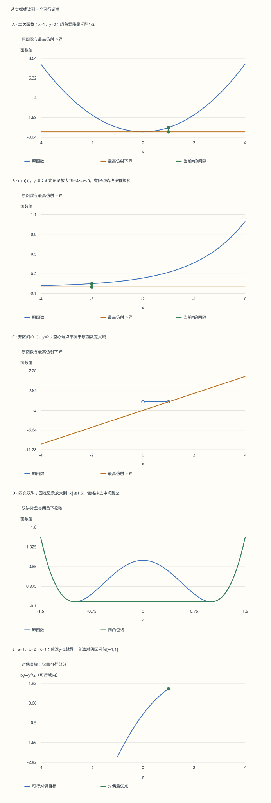

本页目录
凸优化 I · 从支撑线到 Fenchel 对偶证书
先修：内积、导数、凸集与次梯度。本页目标：亲手计算共轭的有效域，分清上确界与最大值；把两个 Fenchel–Young 间隙拼成可核对的原始–对偶证书，知道强对偶定理还需要哪些条件。
学习层：一条线托住函数，为什么能证明一个解够好？
固定斜率 \(y\) 后，先把直线向上推，直到继续上推就会穿过函数图像。允许的最高截距是 \(-f^*(y)\)。但“不能再推”不保证在某个有限点碰到了图像：\(e^x\) 的水平下界0就是反例。
先比较二次函数、绝对值和指数函数，再看开区间与闭区间是否给出相同共轭。最后进入一个真正的优化问题：同时选择候选原始解与候选对偶解，比较两个目标值。对偶不可行时，程序必须拒绝把那个有限二次表达式当成下界。
无脚本固定对照：所有曲线与下表读取同一份固定记录。图中的局部放大只选择已有节点；不重新采样、不压平数值。

| 对照 | x | y | f(x) | f*(y) | 间隙 | 上确界取得 |
|---|---|---|---|---|---|---|
| quadratic-gap | 1 | 0 | 0.5 | 0 | 0.5 | 是 |
| exponential-zero | -3 | 0 | 0.0497870684 | 0 | 0.0497870684 | 否 |
| open | 1 | 2 | +∞ | 2 | +∞ | 否 |
| doublewell | 0 | 0 | 1 | 0 | 1 | 是 |
| 对照 | x | y | 原始值 | 对偶可行 | 正式对偶值 | 间隙 |
|---|---|---|---|---|---|---|
| dual-gap | 0 | 1 | 2 | 是 | 1.5 | 0.5 |
| dual-invalid | 1 | 2 | 1.5 | 否 | −∞ | +∞ |
下载六组完整固定记录。两个优化例均取a=1、b=2、λ=1；y=2的有限二次表达式不满足共轭有效域，不能充当对偶下界。
曲线保留实际数值并调整坐标范围，不把超出图窗的指数曲线压成平线。JSON用带符号的 +Infinity、-Infinity 字符串表示扩展实数；它们不是缺失值。四次双阱的共轭使用单调方程的浮点二分，记录每一步区间和残差；图形和有限残差不会被当作一般定理的证明。
1. 先说清函数的定义域
允许 \(f:\mathbb R^n\to(-\infty,+\infty]\)，就能把约束写进函数。有效域是 \(\operatorname{dom}f=\{x:f(x)<+\infty\}\)；“真函数”表示它从不取 \(-\infty\)，且有效域非空。这里的凸分析示性函数是域内0、域外 \(+\infty\)，与概率论的0–1示性函数不同：
“闭凸函数”指上镜图 \(\operatorname{epi}f=\{(x,t):t\ge f(x)\}\) 闭且凸，也就是下半连续且凸。开区间 \((0,1)\) 的示性函数凸但不闭：端点处函数值跳到了无穷，而域内值始终为0。
计算间隙时先查两边有效域。若共轭为 \(+\infty\)，对应的有限斜率没有有限截距下界；不能把它替换成一个画图方便的大数。也不要对 \(+\infty-\infty\) 做普通代数。
2. 共轭与支撑线的精确关系
定义
若 \(f^*(y)\) 有限，把定义重排得到 \(\langle y,x\rangle-f^*(y)\le f(x)\)。反过来，若 \(\langle y,x\rangle+c\le f(x)\) 对所有 \(x\) 成立，则 \(c\le-f^*(y)\)。所以共轭给的是固定斜率下最高的仿射下界，不保证它存在有限接触点。
\(f^*\) 是一族关于 \(y\) 的连续仿射函数的上确界，因此凸且下半连续；例如其上镜图是闭半空间 \(t\ge\langle y,x\rangle-f(x)\) 的交。不要求原函数凸。若原函数没有任何仿射下界，共轭可能处处为无穷，例如 \(f(x)=-x^2\)。后面的无损重建定理会明确排除这种退化。
3. Fenchel–Young：间隙何时恰为零
对真凸函数，在 \(x\in\operatorname{dom}f\) 处定义次梯度：\(y\in\partial f(x)\) 意味着对所有 \(z\) 有 \(f(z)\ge f(x)+\langle y,z-x\rangle\)。移项再取上确界，得到
等式还说明当前 \(x\) 真正取得了定义共轭的上确界。若 \(f\) 真闭凸，双共轭定理又给出对称关系 \(y\in\partial f(x)\iff x\in\partial f^*(y)\)。
“间隙接近零”与这个精确等式不能混用。绝对值在任意 \(x>0\) 的次梯度都是单点 \(\{1\}\)，即使 \(x\) 非常小，也不是折角处的区间 \([-1,1]\)。实验将定义域、解析分支条件、数值间隙与残差分列；浮点接近只能支持对应容差下的数值判断。
4. 四组共轭，逐个从上确界计算
二次函数通过配方直接得到
对 \(|x|\)，若 \(|y|\le1\)，有 \(yx-|x|\le0\)，而 \(x=0\) 取到0；若 \(|y|>1\)，沿 \(x\) 与 \(y\) 同号的方向让 \(|x|\to\infty\)，目标趋于无穷。因此 \(|x|^*=\iota_{[-1,1]}\)。边界 \(y=1\) 的最大化点是整条 \(x\ge0\) 射线；共轭有限并不意味着最大化点唯一。
指数函数在 \(y>0\) 时的导数方程是 \(e^x=y\)，严格凹的目标在 \(x=\log y\) 最大；\(y=0\) 时 \(-e^x\) 只能趋近0；\(y<0\) 时令 \(x\to-\infty\)，线性项趋于正无穷：
对 hinge \(h(x)=\max(0,1-x)\)，在 \(x\le1\) 上目标是 \((y+1)x-1\)，在 \(x\ge1\) 上是 \(yx\)。两条无界射线要求 \(y+1\ge0\) 且 \(y\le0\)，于是
区间内部的最优点为1；\(y=-1\) 或0分别产生一条最优射线。将损失乘以 \(C>0\) 时，用 \((Ch)^*(y)=C h^*(y/C)\) 就能读出盒约束 \(-C\le y\le0\)。
5. 范数、幂函数与熵：约束不能省略
对任意范数，双范数不等式给 \(\langle x,y\rangle\le\|x\|\|y\|_*\)。若 \(\|y\|_*\le1\)，取 \(x=0\) 达到上确界0；若大于1，沿一个内积超过范数的方向放大 \(x\)，上确界无穷。因此范数的共轭是双范数单位球的示性函数。
若 \(1<p<\infty\)，\(1/p+1/q=1\)，最大化 \(yx-|x|^p/p\)，同号最优点满足 \(|x|^{p-1}=|y|\)，代回得到
绝对值保证非整数幂在负数输入时也有定义；\(p=1\) 对应范数的示性函数共轭，不直接代入有限 \(q\) 的公式。
取 \(0\log0=0\)。非负正交象限上的负熵逐坐标最大化，导数方程为 \(x_i=e^{y_i-1}\)，故
加入总和为1的单纯形约束后，问题变了。令 \(Z=\sum_i e^{y_i}\)、\(q_i=e^{y_i}/Z\)，则对任意概率向量 \(p\)，
取 \(p=q\) 达到0，因此单纯形负熵的共轭才是 log-sum-exp。\(q_i>0\)，所以即使某个 \(p_i=0\)，约定 \(0\log(0/q_i)=0\) 也无歧义。一个约束的增删改变了共轭，不能把两条公式当同义改写。
6. 双共轭为何重建真闭凸函数
Fenchel–Young 已给 \(f^{**}\le f\)。反向需要一个有限维几何事实：真闭凸函数的上镜图外任一点，都能与上镜图用非竖直超平面严格分离。写成斜率形式就得到仿射下界 \(\ell\le f\)，且 \(\ell(x_0)>t_0\)。
这里“非竖直”值得解释。先用闭凸集的严格分离定理；由于上镜图沿高度向上封闭，分离法向量的高度分量可取非正。如果它为负，归一化就给仿射下界；如果它为零，分离的是 \(x_0\) 与有效域。取一个已知仿射下界 \(\ell_0\)，把严格分离有效域的线性不等式乘以足够大的正数后加到 \(\ell_0\)，仍是下界，却可让它在 \(x_0\) 处高于任意给定 \(t_0\)。真闭凸函数存在至少一个仿射下界：在其有效域相对内部用支撑超平面并将斜率延拓到全空间即可。
现在对每个 \(t_0<f(x_0)\)，取上述 \(\ell(x)=\langle y,x\rangle+c\)。第2节说明 \(c\le-f^*(y)\)，所以 \(f^{**}(x_0)\ge\ell(x_0)>t_0\)。让 \(t_0\uparrow f(x_0)\)；若 \(f(x_0)=+\infty\)，则让 \(t_0\) 任意大，得到
这不是说每个点都有有限次梯度，而是说所有仿射下界的上确界足够重建函数。有限维分离与共轭定理的图形证明可对照 MIT 6.253 讲义的共轭部分。
7. 开区间与双阱：闭化和凸化分别改变什么
开区间与闭区间的支撑函数相同：
非零斜率在开区间里不取得上确界，但闭区间可以在端点取得。双共轭重建的是闭化后的对象；用有限网格寻找最大点会把这个区别藏起来。
再取非凸函数 \(f(x)=(x^2-1)^2\)。它的闭凸包络是
证明分两步：所给函数在两外侧二阶导数 \(12x^2-4>0\)，在接缝处斜率均为0，因此整体闭凸且不超过 \(f\)。任何凸下界在 \(x=\pm1\) 处至多为0，所以在中间也至多为0；外侧又不能超过 \(f\)，故这个下界已经最大。
计算双阱共轭时，\(y>0\) 可先比较 \(x\) 与 \(-x\) 排除负侧最大点；在 \(0\le x<1\) 目标严格增加；\(x\ge1\) 上唯一极值满足 \(4x(x^2-1)=y\)，且为全局最大。负斜率用对称性，零斜率有两个最大点 \(\pm1\)。实验只对这条已证明单调的根方程二分，不把一个任意局部驻点当成全局共轭。
8. 从一个函数到一个优化问题
令 \(f,g\) 真闭凸，\(A\) 为线性映射，原始值为 \(p^*=\inf_x\{f(x)+g(Ax)\}\)。引入 \(z=Ax\)，本页选拉格朗日函数 \(L=f(x)+g(z)+\langle y,z-Ax\rangle\)。分别对 \(x,z\) 取下确界，得到
符号来自约束写法；换成 \(Ax-z\) 会把乘子改号，不改变问题。对任何原始点和具有有限对偶目标的 \(y\)，两个 Fenchel–Young 不等式相加，交叉内积抵消：
因此 \(d^*\le p^*\)。这种弱对偶不依赖强对偶的约束品性。如果候选对偶点可行且原始–对偶间隙为 \(\varepsilon\)，就有 \(P(x)-p^*\le\varepsilon\)；它是候选原始点的次优程度证书，而不只是两条曲线画得很近。
9. 强对偶和取得性要分别写
有限维 Fenchel–Rockafellar 的一个常用充分条件是：\(f,g\) 真闭凸，\(p^*\) 为有限实数，并且
结论是 \(p^*=d^*\)，且对偶最大值取得。它不自动保证原始最小值取得。相对内部是在有效域的仿射包中取内部，用来处理低维约束；不能把它简单换成环境空间的普通内部。
证明路线是看扰动值函数 \(v(u)=\inf_x\{f(x)+g(Ax+u)\}\)。约束品性使 \(0\) 位于其有效域的相对内部；有限 \(v(0)\) 排除在该处的无界退化。有限维凸函数在相对内部有支撑斜率，故存在 \(p\) 使 \(v(u)\ge v(0)+\langle p,u\rangle\)。令 \(u=z-Ax\)，再对 \(x,z\) 取下确界，得到
与弱对偶相合，\(y=-p\) 就取得对偶最优值。这条证明展示了约束品性的作用：保证扰动问题在原点有支持它的乘子。取 \(f(x)=e^x,g\equiv0,A=0\) 时条件成立，原始下确界0却没有有限最小点，说明“值相等”与“原始点存在”不能合并。
10. 一维稀疏拟合：把对偶证书完整算出来
实验另给出 \(P(x)=\lambda|x|+(ax-b)^2/2\)，\(\lambda\ge0\)。设 \(f(x)=\lambda|x|,g(z)=(z-b)^2/2\)；配方得 \(g^*(u)=bu+u^2/2\)。因此
当 \(a\ne0\)，把二次函数的顶点 \(b\) 投影到区间 \([-\lambda/|a|,\lambda/|a|]\)，得到 \(y^*\)，再由 \(y=b-ax\) 得 \(x^*=(b-y^*)/a\)。当 \(a=0\)，对偶最优为 \(y^*=b\)；\(\lambda>0\) 时原始最优 \(x^*=0\)，\(\lambda=0\) 时所有 \(x\) 都最优。这里 \(g\) 在全空间连续，所有这些退化分支仍满足强对偶条件。
对可行候选 \(y\)，间隙恰好分为两项：
第一项检查残差关系，第二项检查 \(ay\in\lambda\partial|x|\)。二者均非负；它们同时为0就给出最优性。程序按等价区间条件 \(|y|\le\lambda/|a|\) 判断非零 \(a\) 的可行性，保留浮点间隙，不用偷偷截断负的末位舍入来伪装精确证明。\(a=0\) 单独处理。
例如 \(a=1,b=2,\lambda=1\) 时 \(x^*=y^*=1\)，两边目标均为1.5。若取候选 \(x=0,y=1\)，原始值2，对偶值1.5，间隙0.5全部来自残差平方项；若取 \(y=2\)，虽然 \(by-y^2/2=2\)，它违反盒约束，不能用作合法对偶证书。
11. 次梯度运算为什么也需要约束品性
在适用点，次梯度不等式相加总能得到 \(\partial f(x)+\partial g(x)\subseteq\partial(f+g)(x)\)。反向包含可通过第9节的对偶取得性，把一个支撑 \(f+g\) 的斜率拆成分别支撑 \(f,g\) 的斜率。一个充分条件是两有效域相对内部相交。类似地，若 \(\operatorname{range}A\cap\operatorname{ri}\operatorname{dom}g\ne\varnothing\)，则
反例取 \(g(t)=-\sqrt t\) 于 \(t\ge0\)，域外为 \(+\infty\)，以及零映射 \(Ax=0\)。\(g\) 真闭凸，但在0没有有限次梯度：要求 \(-\sqrt t\ge yt\) 对所有 \(t>0\)，即 \(y\le-1/\sqrt t\)，不可能成立。另一方面 \(g\circ A\equiv0\)，其次梯度为 \(\{0\}\)，而右侧为空集。丢掉条件就会把一条正确链式法则变成错误公式。
最优性 \(0\in\partial f(x^*)\) 直接等价于 \(x^*\) 全局最小；对真闭凸函数，再由共轭关系等价于 \(x^*\in\partial f^*(0)\)。这些都是精确的集合关系；数值实现还需要容差、有限性和原始/对偶可行性检查。
12. 迁移题与完整答案
1．绝对值在一个很小的正数处，次梯度还是区间吗？
不是。取 \(x=10^{-12}>0\)，仍有 \(\partial|x|=\{1\}\)。若 \(y=0\)，Fenchel–Young 间隙为 \(10^{-12}\)，很小但严格为正。把“数值上接近折角”写成“数学上就在折角”会改变集合条件。
2．指数函数共轭在 y=0 有限，为什么找不到接触点？
共轭是 \(\sup_x(-e^x)=0\)，每个有限 \(x\) 都给负值，只能令 \(x\to-\infty\) 逼近。最高水平下界是0，却处处低于函数。有限上确界、上确界取得、最大点唯一是三件不同的事。
3．为什么二次函数是唯一的真闭凸自共轭函数？
若 \(f=f^*\)，Fenchel–Young 对 \(x=y\) 给 \(f(x)\ge\|x\|^2/2\)。共轭反转点态大小关系，因此 \(f^*\le(\|\cdot\|^2/2)^*=\|\cdot\|^2/2\)。结合 \(f=f^*\) 得处处相等。这里是同一个欧氏内积下的精确自共轭，不能随意改变配对或加上常数。
4．同一组熵变量，不同约束给出什么数？
取 \(y=(\log2,0,0)\)。非负正交象限负熵的共轭为 \(4/e\)，最优 \(x=(2/e,1/e,1/e)\)。单纯形负熵的共轭为 \(\log4\)，最优 \(p=(1/2,1/4,1/4)\)。若单纯形候选取 \((1,0,0)\)，间隙为 \(\log4-\log2=\log2\)，也正是它到上述 softmax 分布的 KL 散度。
5．双阱的双共轭为什么不能替代原函数的全部信息？
原函数在0取1，双共轭在0取0；凸包络保留两端最低点的下界，却抹去了中间势垒。把它作为下松弛可以提供下界，但松弛问题的最优点0并不是原问题最优点。原函数最小点只有 \(\pm1\)，松弛的最小点是整个 \([-1,1]\)。
6．稀疏拟合怎样区分原始误差与对偶不可行？
对 \(a=1,b=2,\lambda=1\)，候选 \(x=0,y=1\) 可行且间隙0.5，所以原始次优程度不超过0.5，这里恰等于0.5。改成 \(y=2\) 后必须先报告 \(|ay|>\lambda\)；不能因为两个有限表达式都等于2，就宣布“零间隙最优”。正式对偶值在域外是 \(-\infty\)。
7．强对偶成立，能否写 min 而不写 inf？
不能。\(\inf_x e^x=0\)，没有任何有限 \(x\) 达到0；其共轭在0等于0给出取得的对偶最优值。若需要原始取得性，可另检查例如非空紧的次水平集等充分条件，并说明闭性。强对偶的值结论不能代替这一检查。
8．次梯度和的等号如何在边界失败？
令 \(f(x)=-\sqrt x\) 于 \(x\ge0\)，\(g=\iota_{(-\infty,0]}\)。两者相加为 \(\iota_{\{0\}}\)，故 \(\partial(f+g)(0)=\mathbb R\)。但 \(\partial f(0)=\varnothing\)，所以 \(\partial f(0)+\partial g(0)=\varnothing\)。有效域相对内部 \((0,\infty)\) 与 \((-\infty,0)\) 不相交，正好指出被遗漏的条件。
继续到一阶与近端方法时，可以把算法每次迭代的原始点、可行对偶点和间隙一起记录。由此，“看起来收敛”可以变成带误差上界的停止条件；一般非凸问题则需要重新检查哪些下界与取得性仍然保留。